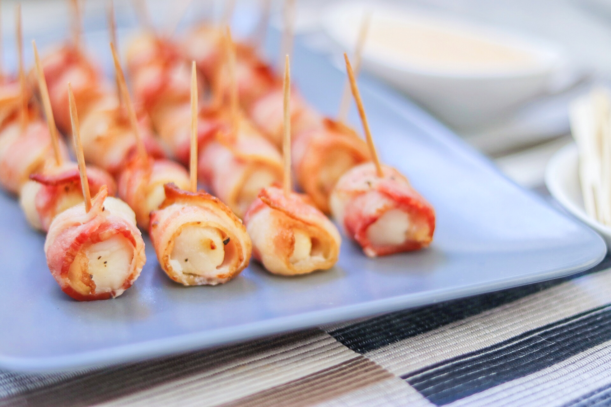

Air Fryer Bacon-Wrapped Scallops with Sriracha Mayo
This delicious appetizer is prepared quickly and easily in the air fryer and served with a spicy Sriracha mayo dipping sauce. I use the smaller bay scallops for this. If you are using jumbo scallops it will require a longer cooking time and longer strips of bacon.
Source: allrecipes.com

Prep: 15 mins
Cook: 20 mins
Total: 35 mins
Servings: 9
Yield: 36 scallops
Ingredients
- 1/2 cup mayonnaise
- 2 tablespoons Sriracha sauce
- 1 pound bay scallops (about 36 small scallops)
- 1 pinch coarse salt
- 1 pinch freshly cracked black pepper
- 12 slices bacon, cut into thirds
- 1 serving olive oil cooking spray
Directions
- Mix mayonnaise and Sriracha sauce together in a small bowl. Refrigerate Sriracha mayo until ready to serve.
- Preheat the air fryer to 390 degrees F (200 degrees C).
- Spread scallops out onto a plate or cutting board and blot dry with a paper towel. Season with salt and pepper. Wrap each scallop with 1/3 slice of bacon and secure with a toothpick.
- Spray the air fryer basket with cooking spray. Place bacon-wrapped scallops in the basket in a single layer; split into 2 batches if necessary.
- Cook in the air fryer for 7 minutes. Check for doneness; scallops should be opaque and bacon should be crispy. Cook 1 to 2 minutes longer, if necessary, checking every minute. Remove scallops carefully with tongs and place on a paper towel-lined plate to absorb excess oil from the bacon. Serve with Sriracha mayo.
Nutrition Facts
Per Serving: 222 calories; protein 17.3g; carbohydrates 3.3g; fat 15.3g; cholesterol 48.5mg; sodium 682.5mg.
Back to main page to see more recipes